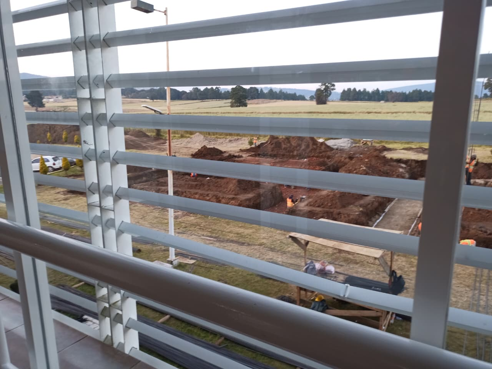

En la Unidad de Estudios Superiores San José del Rincón se firmó un convenio para iniciar con la construcción de un nuevo edificio para poder albergar a todos los estudiantes inscritos en la institución, al igual que se busca agregar una nueva carrera profesional a la unidad, de esta manera la institución crecerá en tamaño para poder tener todos los espacios como aulas y laboratorios necesarios para el correcto desarrollo de las actividades de los estudiantes.